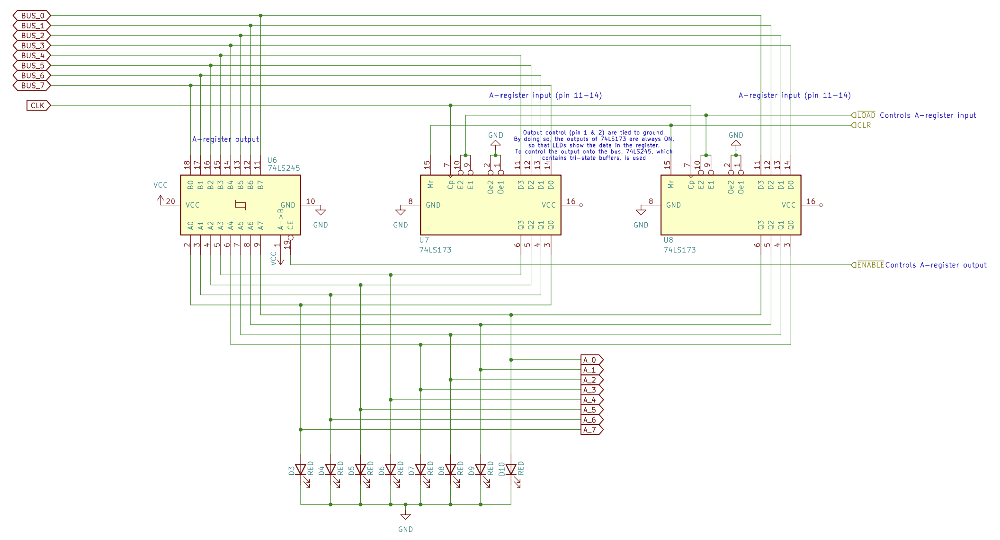
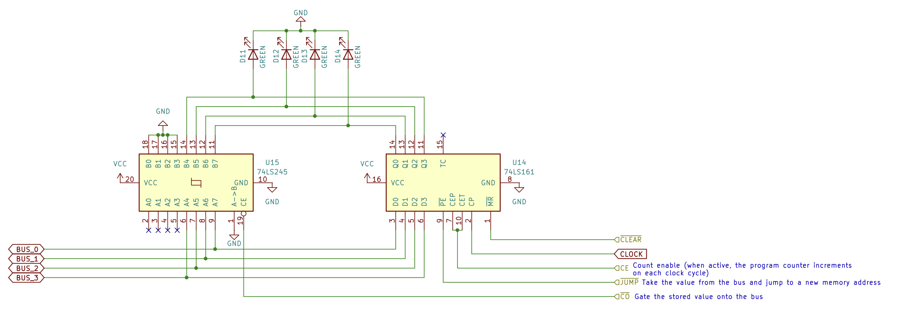

An 8-bit CPU based on the SAP-1 (Simple-As-Possible) architecture built on breadboards as an exercise to learn about computer architecture. This project is based on Ben Eater's 8-bit computer.
Multivibrator circuits are used to generate two-state signals. Three configurations are used: astable, monostable, and bistable.

Arithmetic logic unit (ALU) is a combinational circuit for performing arithmetic and logical or bitwise operations on binary numbers.
The SAP-1 computer contains a simple ALU, consisting of logic gates and flip-flops, capable of binary addition and subtraction on data in A-register (accumulator) and B-register.
Connecting multiple D flip-flops to a common clock creates a register that can hold data, memory addresses, or instructions. In this design, pairs of 74LS173 (4-bit D-type registers) are used. Although the 74LS173 has built-in three-state outputs, the output control pins are tied to the ground so its outputs remain active, allowing status LEDs to display the data stored in the register. To control the output onto the bus, 74LS245 (octal bus transceivers), which contains three-state outputs, is added. While the 74LS245 features bi-directional transceivers, it is wired unidirectionally to gate stored data onto the bus while the 74LS173 inputs read from the bus directly.
Inside the ALU, the 8-bit numbers in A-register and B-register are added in the sum register. To perform addition and subtraction, two 74LS283 (4-bit binary full adders) are cascaded together, taking data from registers A and B.

Program counter (also known as instruction pointer) is a register that stores the memory address of the next instruction to be executed.
A binary counter, whose value increments with each clock pulse, can be created by cascading multiple flip-flops (J-K or D-types), connecting the output of each flip-flop to the clock input of the next stage. By doing so, each stage flips at half the frequency of the previous stage, creating a counting sequence in binary.
Using the 74LS161 (4-bit binary counter), a program counter that increments once per instruction can be created. At the start of the instruction cycle (also known as the fetch–decode–execute cycle), the memory address stored in the program counter is fetched to the memory address register (MAR). Then, the program counter can:
Activating the count enable pin of the 74LS161 allows the program counter to increment and advance to the next instruction. Count enable is disabled while the instruction is being executed. Conversely, activating the jump (load) pin allows the program counter to take the value from the bus and redirect to a new memory address.
Static Random Access Memory (SRAM)
Static RAM...
Instruction register is a register that...